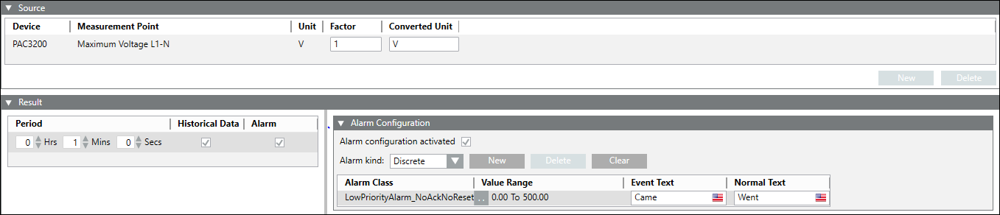

Source Expander
The fields displayed in this expander differ according to the selected device.
- Device: The device to be configured.
- New: Click to add a device.
- Delete:Removes the selected device.
- Measurement Point: Select the required measurement point value.
- Unit: Displays the unit of the average value data point.
- Factor: Enter the desired factor to calculate the average value for the defined unit.
- Converted Unit: Enter the unit to which the selected measurement point be converted.
- Parameter: Use these assigned parameter values in the formula text field for calculations.
- Resultant Unit: Displays the unit of the measurement point after conversion.
- Period (Min): Select the time interval for which the energy data is collected.
- Historical Data: Select this checkbox to configure the device using historical data.
- Alarm: Select this checkbox to setup alarm configuration for the device.
- Dividend: Allows you to specify the dividend value for KPI calculation.
- Divisor: Allows you to specify the divisor, either as a measurement point or as a manual value. If the divisor is not an energy measurement point, the last archived value of the calculation interval at the time of KPI calculation is considered. If an archived value is not available, the instantaneous value of the measurement point at the time of KPI calculation is considered. However, if it is an energy measurement point, the energy consumption for that calculation interval is considered for the KPI calculation. The value of the divisor should always be greater than 0.
- Measurement Point: Select this option to specify the divisor as a measurement point.
- Manual Value: Select this option to specify the divisor as a manual value. If you select Manual Value, you will have to enter a Value and Unit for the KPI calculation.
- Cost Factor: Select this checkbox, if you want to enter a cost factor for the KPI calculation. You must also specify a currency associated with the cost factor.


NOTE:
Use drag and drop function to add Non-Powermanager devices.